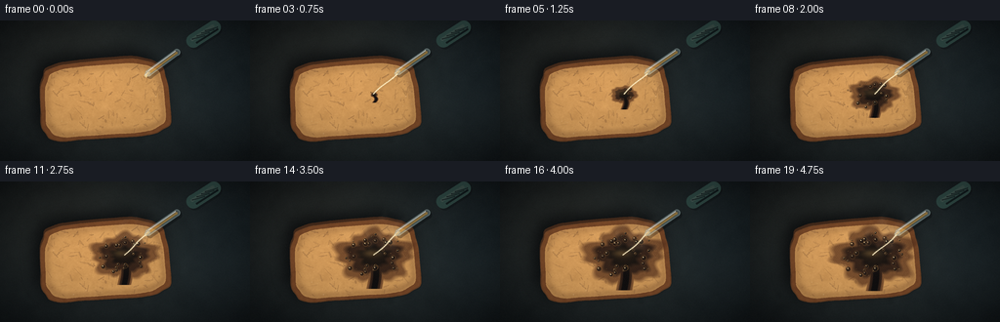
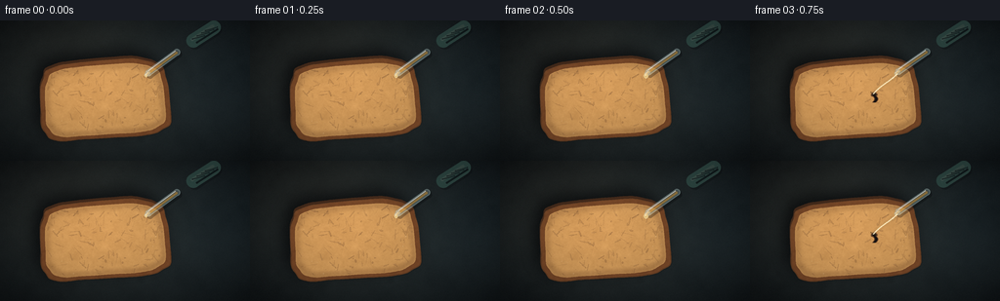
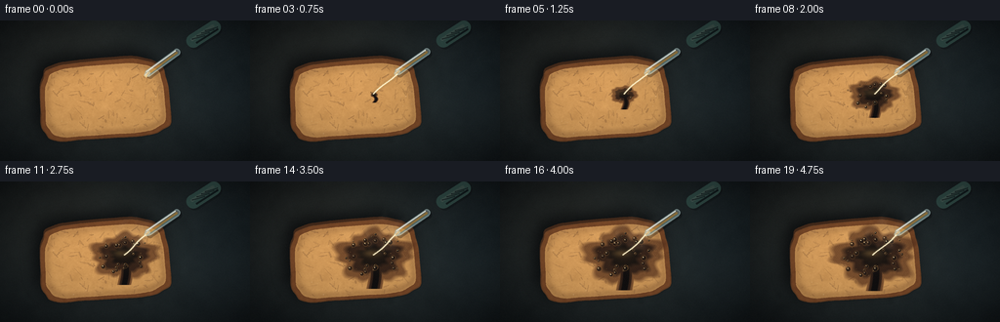
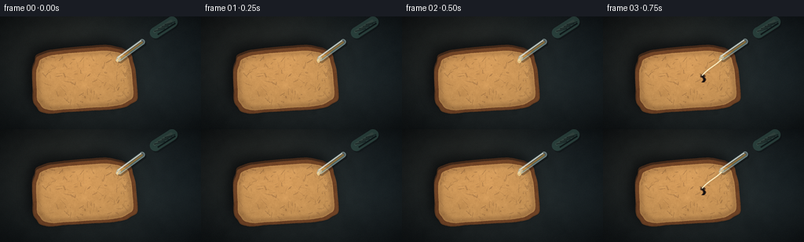

CODING AGENTS AS PIXEL WORLD MODELS
traex/DeepSeek-V4.1-Flash · phygen_151
点击播放 · 原生 RGB 像素
逐轮保存的候选
回放视频、检查图与代码变化。
每份候选均可单独播放。实际图片检查记录在下方工具轨迹中。
候选 01播放与检查图
点击播放 · 原生 RGB 像素


展开代码变化
--- 上一保存版本
+++ 本次保存版本
@@ -0,0 +1,593 @@
+from __future__ import annotations
+
+import math
+from pathlib import Path
+
+import numpy as np
+from PIL import Image, ImageChops, ImageDraw, ImageFilter
+
+import artifact_io
+
+
+CASE_DIR = Path(__file__).resolve().parent
+W, H, N, FPS = 256, 144, 20, 4
+S = 4
+HW, HH = W * S, H * S
+
+CONTACT = np.array([127.0, 76.0])
+TIP = np.array([153.0, 52.0])
+
+
+def smoothstep(x: float) -> float:
+ x = max(0.0, min(1.0, x))
+ return x * x * (3.0 - 2.0 * x)
+
+
+def ease_out(x: float) -> float:
+ x = max(0.0, min(1.0, x))
+ return 1.0 - (1.0 - x) ** 2.2
+
+
+def noise_image(rng: np.random.Generator, scale: int) -> np.ndarray:
+ small_h = max(2, math.ceil(HH / scale))
+ small_w = max(2, math.ceil(HW / scale))
+ values = rng.normal(0.0, 1.0, (small_h, small_w))
+ values = (values - values.min()) / max(1e-6, values.max() - values.min())
+ image = Image.fromarray(np.uint8(values * 255.0), "L")
+ image = image.resize((HW, HH), Image.Resampling.BICUBIC)
+ return np.asarray(image, dtype=np.float32) / 255.0
+
+
+def fractal_noise(
+ rng: np.random.Generator, scales: tuple[int, ...], weights: tuple[float, ...]
+) -> np.ndarray:
+ result = np.zeros((HH, HW), dtype=np.float32)
+ for scale, weight in zip(scales, weights):
+ result += noise_image(rng, scale) * weight
+ result -= result.min()
+ result /= max(1e-6, result.max())
+ return result
+
+
+def bread_points(scale_x: float, scale_y: float, wobble: float = 1.0) -> list[tuple[int, int]]:
+ cx, cy = 107.0, 82.0
+ rx, ry = 66.0 * scale_x, 40.0 * scale_y
+ rotation = math.radians(-4.0)
+ points: list[tuple[int, int]] = []
+ for index in range(256):
+ theta = 2.0 * math.pi * index / 256.0
+ c, s = math.cos(theta), math.sin(theta)
+ # A superellipse reads as a rounded sandwich slice rather than a plain oval.
+ px = math.copysign(abs(c) ** (2.0 / 4.7), c)
+ py = math.copysign(abs(s) ** (2.0 / 4.7), s)
+ irregular = 1.0 + wobble * (
+ 0.024 * math.sin(3.0 * theta + 0.4)
+ + 0.013 * math.sin(7.0 * theta - 0.8)
+ + 0.006 * math.sin(13.0 * theta + 1.6)
+ )
+ x = rx * px * irregular
+ y = ry * py * irregular
+ xr = x * math.cos(rotation) - y * math.sin(rotation)
+ yr = x * math.sin(rotation) + y * math.cos(rotation)
+ points.append((round((cx + xr) * S), round((cy + yr) * S)))
+ return points
+
+
+def polygon_mask(points: list[tuple[int, int]]) -> Image.Image:
+ mask = Image.new("L", (HW, HH), 0)
+ ImageDraw.Draw(mask).polygon(points, fill=255)
+ return mask
+
+
+def make_bench() -> Image.Image:
+ rng = np.random.default_rng(151)
+ yy, xx = np.mgrid[0:HH, 0:HW].astype(np.float32)
+ x = xx / S
+ y = yy / S
+
+ coarse = fractal_noise(rng, (26, 64, 150, 320), (0.36, 0.30, 0.22, 0.12))
+ fine = fractal_noise(rng, (5, 13, 35), (0.50, 0.33, 0.17))
+
+ warm_pool = np.exp(-(((x - 76.0) / 105.0) ** 2 + ((y - 38.0) / 88.0) ** 2))
+ cool_edge = np.exp(-(((x - 238.0) / 78.0) ** 2 + ((y - 48.0) / 92.0) ** 2))
+ vignette = np.clip(
+ 1.0 - 0.50 * (((x - W / 2) / (W * 0.72)) ** 2 + ((y - H / 2) / (H * 0.70)) ** 2),
+ 0.45,
+ 1.08,
+ )
+
+ base = np.empty((HH, HW, 3), dtype=np.float32)
+ base[..., 0] = 25.0 + 8.0 * coarse + 2.5 * fine + 12.0 * warm_pool + 2.0 * cool_edge
+ base[..., 1] = 31.0 + 9.0 * coarse + 2.5 * fine + 8.0 * warm_pool + 5.0 * cool_edge
+ base[..., 2] = 31.0 + 9.0 * coarse + 2.0 * fine + 4.0 * warm_pool + 7.0 * cool_edge
+ base *= vignette[..., None]
+
+ image = Image.fromarray(np.uint8(np.clip(base, 0, 255)), "RGB").convert("RGBA")
+
+ # Sparse bench scratches, kept low-contrast so they never compete with the bread.
+ scratches = Image.new("RGBA", (HW, HH), (0, 0, 0, 0))
+ draw = ImageDraw.Draw(scratches)
+ srng = np.random.default_rng(161)
+ for _ in range(34):
+ x0 = srng.uniform(0, W)
+ y0 = srng.uniform(0, H)
+ length = srng.uniform(3, 17)
+ angle = srng.uniform(-0.16, 0.16)
+ draw.line(
+ [
+ (int(x0 * S), int(y0 * S)),
+ (int((x0 + length * math.cos(angle)) * S), int((y0 + length * math.sin(angle)) * S)),
+ ],
+ fill=(170, 177, 166, int(srng.integers(4, 11))),
+ width=max(1, int(S * srng.uniform(0.25, 0.65))),
+ )
+ image = Image.alpha_composite(image, scratches.filter(ImageFilter.GaussianBlur(0.45 * S)))
+ return image.convert("RGB")
+
+
+def make_bread(bench: Image.Image) -> tuple[Image.Image, Image.Image, Image.Image]:
+ rng = np.random.default_rng(1511)
+ outer = bread_points(1.0, 1.0, 1.0)
+ inner = bread_points(0.925, 0.895, 0.75)
+ outer_mask = polygon_mask(outer)
+ inner_mask = polygon_mask(inner)
+
+ # Contact shadow and the small visible edge of the slice.
+ shadow_mask = outer_mask.transform(
+ (HW, HH),
+ Image.Transform.AFFINE,
+ (1, 0, 6.0 * S, 0, 1, 8.0 * S),
+ resample=Image.Resampling.BICUBIC,
+ ).filter(ImageFilter.GaussianBlur(8.0 * S))
+ shadow = Image.new("RGBA", (HW, HH), (0, 0, 0, 0))
+ shadow.putalpha(shadow_mask.point(lambda value: int(value * 0.72)))
+ image = Image.alpha_composite(bench.convert("RGBA"), shadow)
+
+ edge_mask = outer_mask.transform(
+ (HW, HH),
+ Image.Transform.AFFINE,
+ (1, 0, 0.7 * S, 0, 1, 2.7 * S),
+ resample=Image.Resampling.BICUBIC,
+ )
+ edge_layer = Image.new("RGBA", (HW, HH), (72, 43, 25, 255))
+ edge_layer.putalpha(edge_mask.point(lambda value: int(value * 0.92)))
+ image = Image.alpha_composite(image, edge_layer)
+
+ crust_noise = fractal_noise(rng, (8, 22, 70), (0.50, 0.34, 0.16))
+ crumb_noise = fractal_noise(rng, (5, 14, 42, 110), (0.34, 0.30, 0.24, 0.12))
+ crumb_speckle = fractal_noise(rng, (3, 9), (0.65, 0.35))
+ yy, xx = np.mgrid[0:HH, 0:HW].astype(np.float32)
+ x = xx / S
+ y = yy / S
+ center_light = np.exp(-(((x - 92.0) / 74.0) ** 2 + ((y - 64.0) / 49.0) ** 2))
+
+ crust = np.empty((HH, HW, 3), dtype=np.float32)
+ crust[..., 0] = 100.0 + 24.0 * crust_noise + 10.0 * center_light
+ crust[..., 1] = 58.0 + 17.0 * crust_noise + 7.0 * center_light
+ crust[..., 2] = 30.0 + 11.0 * crust_noise + 4.0 * center_light
+
+ crumb = np.empty((HH, HW, 3), dtype=np.float32)
+ crumb[..., 0] = (
+ 191.0 + 25.0 * (crumb_noise - 0.5) + 8.0 * (crumb_speckle - 0.5) + 20.0 * center_light
+ )
+ crumb[..., 1] = (
+ 142.0 + 23.0 * (crumb_noise - 0.5) + 7.0 * (crumb_speckle - 0.5) + 13.0 * center_light
+ )
+ crumb[..., 2] = (
+ 83.0 + 18.0 * (crumb_noise - 0.5) + 5.0 * (crumb_speckle - 0.5) + 8.0 * center_light
+ )
+
+ crust_image = Image.fromarray(np.uint8(np.clip(crust, 0, 255)), "RGB")
+ crumb_image = Image.fromarray(np.uint8(np.clip(crumb, 0, 255)), "RGB")
+ image = Image.composite(crust_image.convert("RGBA"), image, outer_mask)
+ image = Image.composite(crumb_image.convert("RGBA"), image, inner_mask)
+
+ # Toasted inner edge, denser at the lower-right where the slice caught more heat.
+ eroded = inner_mask
+ for _ in range(4):
+ eroded = eroded.filter(ImageFilter.MinFilter(9))
+ toast_ring = ImageChops.subtract(inner_mask, eroded).filter(ImageFilter.GaussianBlur(2.1 * S))
+ toast_alpha = np.asarray(toast_ring, dtype=np.float32) / 255.0
+ yy_n = yy / HH
+ xx_n = xx / HW
+ directional = np.clip(0.25 + 0.65 * (0.55 * xx_n + 0.45 * yy_n), 0.0, 1.0)
+ toast_alpha = np.uint8(np.clip(toast_alpha * directional * 120.0, 0, 150))
+ toast_layer = Image.new("RGBA", (HW, HH), (82, 46, 24, 255))
+ toast_layer.putalpha(Image.fromarray(toast_alpha, "L"))
+ image = Image.alpha_composite(image, toast_layer)
+
+ # Pores: small shadowed voids with a faint illuminated upper edge.
+ pores = Image.new("RGBA", (HW, HH), (0, 0, 0, 0))
+ pore_draw = ImageDraw.Draw(pores)
+ mask_pixels = np.asarray(inner_mask)
+ accepted = 0
+ attempts = 0
+ while accepted < 165 and attempts < 2200:
+ attempts += 1
+ px = rng.uniform(44.0, 171.0)
+ py = rng.uniform(47.0, 118.0)
+ if mask_pixels[min(HH - 1, int(py * S)), min(HW - 1, int(px * S))] < 245:
+ continue
+ long_axis = rng.uniform(0.55, 3.2) ** 1.45
+ short_axis = rng.uniform(0.35, 1.55)
+ angle = rng.uniform(0.0, math.pi)
+ dx = math.cos(angle) * long_axis
+ dy = math.sin(angle) * long_axis
+ cx, cy = px * S, py * S
+ alpha = int(rng.integers(30, 92))
+ pore_draw.line(
+ [(int(cx - dx * S), int(cy - dy * S)), (int(cx + dx * S), int(cy + dy * S))],
+ fill=(91, 57, 33, alpha),
+ width=max(1, int(short_axis * S * 0.9)),
+ )
+ pore_draw.ellipse(
+ [
+ int(cx - short_axis * S * 0.65),
+ int(cy - short_axis * S * 0.65),
+ int(cx + short_axis * S * 0.65),
+ int(cy + short_axis * S * 0.65),
+ ],
+ fill=(111, 72, 43, alpha),
+ )
+ if short_axis > 0.9:
+ pore_draw.line(
+ [
+ (int(cx - dx * S * 0.8 - 0.4 * S), int(cy - dy * S * 0.8 - 0.5 * S)),
+ (int(cx + dx * S * 0.8 - 0.4 * S), int(cy + dy * S * 0.8 - 0.5 * S)),
+ ],
+ fill=(231, 190, 132, int(alpha * 0.42)),
+ width=max(1, int(0.38 * S)),
+ )
+ accepted += 1
+
+ pore_alpha = ImageChops.multiply(pores.getchannel("A"), inner_mask)
+ pores.putalpha(pore_alpha)
+ image = Image.alpha_composite(image, pores)
+
+ # Crust rim highlights and a slightly darker lower lip.
+ rim = Image.new("RGBA", (HW, HH), (0, 0, 0, 0))
+ rim_draw = ImageDraw.Draw(rim)
+ rim_draw.line(outer + [outer[0]], fill=(232, 174, 109, 112), width=max(1, int(0.72 * S)))
+ image = Image.alpha_composite(image, rim.filter(ImageFilter.GaussianBlur(0.42 * S)))
+
+ lower_lip = Image.new("RGBA", (HW, HH), (0, 0, 0, 0))
+ lip_draw = ImageDraw.Draw(lower_lip)
+ lip_points = [point for point in outer if point[1] > 90 * S]
+ if lip_points:
+ lip_draw.line(lip_points, fill=(53, 31, 18, 105), width=max(1, int(0.85 * S)))
+ image = Image.alpha_composite(image, lower_lip.filter(ImageFilter.GaussianBlur(0.6 * S)))
+
+ # A few flour flecks catch the key light.
+ flour = Image.new("RGBA", (HW, HH), (0, 0, 0, 0))
+ flour_draw = ImageDraw.Draw(flour)
+ for _ in range(26):
+ px = rng.uniform(47.0, 168.0)
+ py = rng.uniform(50.0, 116.0)
+ if mask_pixels[min(HH - 1, int(py * S)), min(HW - 1, int(px * S))] < 245:
+ continue
+ radius = rng.uniform(0.20, 0.55) * S
+ flour_draw.ellipse(
+ [px * S - radius, py * S - radius, px * S + radius, py * S + radius],
+ fill=(255, 232, 190, int(rng.integers(22, 62))),
+ )
+ image = Image.alpha_composite(image, flour)
+
+ return image.convert("RGB"), outer_mask, inner_mask
+
+
+def reaction_masks(frame: int) -> tuple[np.ndarray, np.ndarray, np.ndarray, float]:
+ yy, xx = np.mgrid[0:HH, 0:HW].astype(np.float32)
+ x = xx / S
+ y = yy / S
+ s = max(0.0, min(1.0, (frame - 3.0) / 16.0))
+ spread = ease_out(s)
+ rx = 3.4 + 35.5 * spread
+ ry = 2.6 + 23.5 * spread
+
+ nx = (x - CONTACT[0]) / rx
+ ny = (y - CONTACT[1]) / ry
+ theta = np.arctan2(ny, nx)
+ wobble = (
+ 1.0
+ + (0.055 + 0.065 * spread) * np.sin(5.0 * theta + 0.45 + 0.20 * frame)
+ + (0.030 + 0.040 * spread) * np.sin(11.0 * theta - 0.85 + 0.08 * frame)
+ + 0.017 * np.sin(17.0 * theta + 1.4)
+ )
+ distance = np.sqrt(nx * nx + ny * ny) / np.maximum(0.48, wobble)
+
+ # A narrow gravity drip makes the burn read as a liquid event, not a decal.
+ drip_length = 7.0 + 28.0 * spread
+ drip_y = y - (CONTACT[1] + 1.0)
+ in_drip_y = (drip_y >= 0.0) & (drip_y <= drip_length)
+ drip_center = CONTACT[0] + 2.2 * np.sin(np.clip(drip_y / max(1.0, drip_length), 0.0, 1.0) * math.pi)
+ drip_width = 2.1 + 5.8 * spread
+ drip_distance = np.abs(x - drip_center) / drip_width
+ drip_shape = np.where(in_drip_y, drip_distance, 99.0)
+ distance = np.minimum(distance, drip_shape)
+
+ wet = np.clip((1.14 - distance) / 0.17, 0.0, 1.0)
+ charred = np.clip((0.83 - distance) / 0.16, 0.0, 1.0)
+ core = np.clip((0.50 - distance) / 0.16, 0.0, 1.0)
+
+ # Mottling keeps the charred edge from looking like a perfect ellipse.
+ mottle = (
+ 0.5
+ + 0.23 * np.sin(17.0 * x + 9.0 * y + 0.15 * frame)
+ + 0.17 * np.sin(31.0 * x - 13.0 * y - 0.12 * frame)
+ + 0.10 * np.sin(47.0 * x + 23.0 * y)
+ )
+ wet *= np.clip(0.72 + 0.36 * mottle, 0.0, 1.0)
+ charred *= np.clip(0.78 + 0.34 * mottle, 0.0, 1.0)
+ core *= np.clip(0.83 + 0.28 * mottle, 0.0, 1.0)
+ return wet, charred, core, spread
+
+
+def composite_alpha(rgb: np.ndarray, alpha: np.ndarray, color: tuple[int, int, int]) -> np.ndarray:
+ a = np.clip(alpha, 0.0, 1.0)[..., None]
+ return rgb * (1.0 - a) + np.asarray(color, dtype=np.float32) * a
+
+
+def draw_reaction(image: Image.Image, frame: int) -> tuple[Image.Image, float]:
+ if frame < 3:
+ return image, 0.0
+ wet, charred, core, spread = reaction_masks(frame)
+ rgb = np.asarray(image, dtype=np.float32)
+
+ rgb = composite_alpha(rgb, wet * 0.78, (83, 47, 26))
+ rgb = composite_alpha(rgb, charred * 0.91, (37, 24, 18))
+ rgb = composite_alpha(rgb, core * 0.94, (13, 12, 11))
+
+ yy, xx = np.mgrid[0:HH, 0:HW].astype(np.float32)
+ x, y = xx / S, yy / S
+ highlight = np.exp(
+ -(((x - (CONTACT[0] - 3.0)) / 8.5) ** 2 + ((y - (CONTACT[1] - 2.5)) / 3.4) ** 2)
+ )
+ highlight *= np.clip(wet * 1.15, 0.0, 1.0) * (0.10 + 0.16 * spread)
+ rgb = rgb * (1.0 - highlight[..., None]) + np.array([208, 160, 88], np.float32) * highlight[..., None]
+ image = Image.fromarray(np.uint8(np.clip(rgb, 0, 255)), "RGB").convert("RGBA")
+
+ # Bubbles and frothy rims appear as the reaction accelerates.
+ bubbles = Image.new("RGBA", (HW, HH), (0, 0, 0, 0))
+ draw = ImageDraw.Draw(bubbles)
+ brng = np.random.default_rng(9001)
+ bubble_count = int(5 + 34 * spread)
+ for index in range(bubble_count):
+ theta = brng.uniform(0.0, 2.0 * math.pi)
+ radial = math.sqrt(brng.uniform(0.08, 0.92))
+ bx = CONTACT[0] + math.cos(theta) * radial * (5.0 + 32.0 * spread)
+ by = CONTACT[1] + math.sin(theta) * radial * (4.0 + 21.0 * spread)
+ threshold = 0.03 + 0.88 * (index / max(1, bubble_count))
+ if spread + 0.06 < threshold:
+ continue
+ radius = brng.uniform(0.42, 2.1) * (0.7 + 0.55 * spread)
+ alpha = int(brng.integers(105, 220))
+ draw.ellipse(
+ [(bx - radius) * S, (by - radius) * S, (bx + radius) * S, (by + radius) * S],
+ fill=(25, 19, 15, alpha),
+ outline=(180, 124, 62, min(235, alpha + 10)),
+ width=max(1, int(0.34 * S)),
+ )
+ if radius > 0.8:
+ draw.ellipse(
+ [
+ (bx - radius * 0.47) * S,
+ (by - radius * 0.48) * S,
+ (bx - radius * 0.05) * S,
+ (by - radius * 0.08) * S,
+ ],
+ fill=(255, 229, 174, min(240, alpha + 15)),
+ )
+ image = Image.alpha_composite(image, bubbles)
+ return image.convert("RGB"), spread
+
+
+def capsule(draw: ImageDraw.ImageDraw, p0: tuple[float, float], p1: tuple[float, float], width: float, fill):
+ a = (p0[0] * S, p0[1] * S)
+ b = (p1[0] * S, p1[1] * S)
+ w = max(1, int(round(width * S)))
+ draw.line([a, b], fill=fill, width=w)
+ radius = width * S * 0.5
+ draw.ellipse([a[0] - radius, a[1] - radius, a[0] + radius, a[1] + radius], fill=fill)
+ draw.ellipse([b[0] - radius, b[1] - radius, b[0] + radius, b[1] + radius], fill=fill)
+
+
+def draw_pipette(image: Image.Image, frame: int, spread: float) -> Image.Image:
+ overlay = Image.new("RGBA", (HW, HH), (0, 0, 0, 0))
+ draw = ImageDraw.Draw(overlay)
+ approach = 1.8 * (1.0 - smoothstep(frame / 4.0))
+ p_tip = TIP + np.array([-1.0, approach])
+ p_neck = np.array([181.0, 32.0 + approach * 0.35])
+ p_bulb0 = np.array([198.0, 20.5 + approach * 0.12])
+ p_bulb1 = np.array([219.0, 7.0])
+
+ # Soft contact shadow behind the glassware.
+ capsule(draw, tuple(p_tip + [1.7, 2.4]), tuple(p_neck + [1.7, 2.4]), 7.2, (0, 0, 0, 72))
+ capsule(draw, tuple(p_bulb0 + [1.7, 2.4]), tuple(p_bulb1 + [1.7, 2.4]), 13.5, (0, 0, 0, 54))
+
+ # Rubber bulb with a cool reflected rim.
+ capsule(draw, tuple(p_bulb0), tuple(p_bulb1), 14.2, (44, 67, 61, 255))
+ capsule(draw, tuple(p_bulb0 + [-1.1, -1.3]), tuple(p_bulb1 + [-1.1, -1.3]), 3.3, (101, 137, 120, 110))
+ capsule(draw, tuple(p_bulb0 + [3.5, 2.0]), tuple(p_bulb1 + [3.5, 2.0]), 2.0, (11, 22, 21, 140))
+ for t in (0.25, 0.48, 0.70, 0.88):
+ rib = p_bulb0 * (1.0 - t) + p_bulb1 * t
+ capsule(draw, tuple(rib + [-6.1, 1.7]), tuple(rib + [6.1, -1.7]), 1.05, (20, 35, 32, 90))
+
+ # Glass tube: a translucent body, amber bore, and two offset speculars.
+ capsule(draw, tuple(p_neck), tuple(p_tip), 7.0, (161, 188, 187, 118))
+ capsule(draw, tuple(p_neck), tuple(p_tip), 4.6, (218, 231, 226, 58))
+ capsule(draw, tuple(p_neck + [-0.4, 0.7]), tuple(p_tip + [-0.4, 0.7]), 2.6, (207, 160, 78, 155))
+ capsule(draw, tuple(p_neck + [-1.5, -1.2]), tuple(p_tip + [-1.5, -1.2]), 0.85, (255, 255, 248, 180))
+ capsule(draw, tuple(p_neck + [1.5, 1.3]), tuple(p_tip + [1.5, 1.3]), 0.55, (80, 114, 116, 130))
+
+ # Tapered glass tip and a bright meniscus.
+ tip_end = p_tip + np.array([-2.4, 2.1])
+ capsule(draw, tuple(p_tip), tuple(tip_end), 3.7, (186, 206, 200, 140))
+ capsule(draw, tuple(p_tip), tuple(tip_end), 1.8, (232, 216, 165, 165))
+ capsule(draw, tuple(p_tip + [-0.7, -0.4]), tuple(tip_end + [-0.7, -0.4]), 0.55, (255, 255, 244, 180))
+
+ if frame < 3:
+ bead_radius = 0.9 + 1.55 * smoothstep((frame + 1.0) / 3.5)
+ bx, by = tip_end + np.array([0.0, bead_radius * 0.8])
+ draw.ellipse(
+ [(bx - bead_radius) * S, (by - bead_radius) * S, (bx + bead_radius) * S, (by + bead_radius) * S],
+ fill=(232, 205, 139, 215),
+ outline=(255, 247, 211, 225),
+ width=max(1, int(0.28 * S)),
+ )
+ draw.ellipse(
+ [(bx - bead_radius * 0.38) * S, (by - bead_radius * 0.58) * S,
+ (bx - bead_radius * 0.02) * S, (by - bead_radius * 0.22) * S],
+ fill=(255, 255, 243, 235),
+ )
+
+ if frame >= 3:
+ start = tip_end + np.array([0.0, 0.8])
+ end = CONTACT + np.array([-0.2, -0.8])
+ glow = Image.new("RGBA", (HW, HH), (0, 0, 0, 0))
+ gdraw = ImageDraw.Draw(glow)
+ core = Image.new("RGBA", (HW, HH), (0, 0, 0, 0))
+ cdraw = ImageDraw.Draw(core)
+ samples = 34
+ for index in range(samples):
+ u = index / (samples - 1)
+ x = start[0] * (1.0 - u) + end[0] * u + 1.1 * math.sin(u * math.pi * 1.6 + frame * 0.33)
+ y = start[1] * (1.0 - u) + end[1] * u
+ width = 2.1 * (1.0 - 0.30 * u)
+ gdraw.ellipse(
+ [(x - width) * S, (y - width * 0.65) * S, (x + width) * S, (y + width * 0.65) * S],
+ fill=(240, 217, 149, 46),
+ )
+ cdraw.ellipse(
+ [(x - 0.55) * S, (y - 0.44) * S, (x + 0.55) * S, (y + 0.44) * S],
+ fill=(255, 244, 207, 205),
+ )
+ overlay = Image.alpha_composite(overlay, glow.filter(ImageFilter.GaussianBlur(0.9 * S)))
+ overlay = Image.alpha_composite(overlay, core)
+
+ # Moving glints make the narrow stream legible without adding temporal flicker.
+ for j in range(3):
+ phase = (frame * 0.23 + j * 0.31) % 1.0
+ x = start[0] * (1.0 - phase) + end[0] * phase + 1.0 * math.sin(phase * math.pi * 1.6)
+ y = start[1] * (1.0 - phase) + end[1] * phase
+ draw.ellipse(
+ [(x - 0.75) * S, (y - 0.55) * S, (x + 0.75) * S, (y + 0.55) * S],
+ fill=(255, 255, 237, 190),
+ )
+
+ overlay = Image.alpha_composite(overlay, Image.new("RGBA", (HW, HH), (0, 0, 0, 0)))
+ return Image.alpha_composite(image.convert("RGBA"), overlay).convert("RGB")
+
+
+def draw_vapor(image: Image.Image, frame: int, spread: float) -> Image.Image:
+ if frame < 4:
+ return image
+ intensity = smoothstep((frame - 3.0) / 14.0)
+ vapor = Image.new("RGBA", (HW, HH), (0, 0, 0, 0))
+ draw = ImageDraw.Draw(vapor)
+ vrng = np.random.default_rng(441)
+ for wisp in range(5):
+ phase = vrng.uniform(0.0, math.pi * 2.0)
+ start_x = CONTACT[0] + vrng.uniform(-10.0, 11.0)
+ start_y = CONTACT[1] - vrng.uniform(0.0, 6.0)
+ length = vrng.uniform(31.0, 56.0)
+ drift = vrng.uniform(8.0, 24.0)
+ thickness = vrng.uniform(1.0, 2.5)
+ for index in range(34):
+ u = index / 33.0
+ x = (
+ start_x
+ + drift * u
+ + 4.8 * math.sin(2.8 * u * math.pi + phase + frame * 0.19)
+ + 1.8 * math.sin(6.5 * u * math.pi - phase)
+ )
+ y = start_y - length * u + 2.8 * math.sin(2.1 * u * math.pi + phase * 1.7)
+ radius = thickness * (0.55 + 0.85 * math.sin(math.pi * u))
+ alpha = int((6.0 + 15.0 * intensity) * math.sin(math.pi * u) ** 0.65)
+ draw.ellipse(
+ [(x - radius) * S, (y - radius) * S, (x + radius) * S, (y + radius) * S],
+ fill=(224, 221, 207, alpha),
+ )
+ vapor = vapor.filter(ImageFilter.GaussianBlur(2.25 * S))
+
+ # A small warm reaction halo is separate from the pale vapor.
+ yy, xx = np.mgrid[0:HH, 0:HW].astype(np.float32)
+ x, y = xx / S, yy / S
+ halo = np.exp(-(((x - CONTACT[0]) / 19.0) ** 2 + ((y - CONTACT[1]) / 13.0) ** 2))
+ halo = np.uint8(np.clip(halo * (8.0 + 20.0 * intensity), 0, 40))
+ glow_layer = Image.new("RGBA", (HW, HH), (195, 129, 62, 255))
+ glow_layer.putalpha(Image.fromarray(halo, "L"))
+ image = Image.alpha_composite(image.convert("RGBA"), glow_layer)
+ return Image.alpha_composite(image, vapor).convert("RGB")
+
+
+def draw_spatter(image: Image.Image, frame: int, spread: float) -> Image.Image:
+ if frame < 7:
+ return image
+ overlay = Image.new("RGBA", (HW, HH), (0, 0, 0, 0))
+ draw = ImageDraw.Draw(overlay)
+ rng = np.random.default_rng(713)
+ count = int(4 + 14 * spread)
+ for index in range(count):
+ angle = rng.uniform(0.0, math.pi * 2.0)
+ distance = rng.uniform(17.0, 39.0)
+ px = CONTACT[0] + math.cos(angle) * distance
+ py = CONTACT[1] + math.sin(angle) * distance * 0.66
+ if not (45.0 < px < 170.0 and 48.0 < py < 117.0):
+ continue
+ radius = rng.uniform(0.32, 1.05)
+ draw.ellipse(
+ [(px - radius) * S, (py - radius) * S, (px + radius) * S, (py + radius) * S],
+ fill=(56, 34, 21, int(rng.integers(70, 145))),
+ )
+ draw.ellipse(
+ [(px - radius * 0.32) * S, (py - radius * 0.38) * S,
+ (px + radius * 0.10) * S, (py + radius * 0.04) * S],
+ fill=(238, 194, 117, int(rng.integers(80, 155))),
+ )
+ return Image.alpha_composite(image.convert("RGBA"), overlay).convert("RGB")
+
+
+def finish_frame(image: Image.Image, frame: int) -> np.ndarray:
+ rgb = np.asarray(image, dtype=np.float32) / 255.0
+ yy, xx = np.mgrid[0:HH, 0:HW].astype(np.float32)
+ x = xx / HW
+ y = yy / HH
+
+ # Gentle filmic grade: warm highlights, cool lifted shadows, restrained grain.
+ luma = 0.2126 * rgb[..., 0] + 0.7152 * rgb[..., 1] + 0.0722 * rgb[..., 2]
+ warm = np.clip((luma - 0.28) * 1.35, 0.0, 1.0)
+ rgb[..., 0] += 0.026 * warm
+ rgb[..., 1] += 0.010 * warm
+ rgb[..., 2] -= 0.008 * warm
+ rgb[..., 2] += 0.013 * (1.0 - luma)
+ rgb[..., 1] += 0.004 * (1.0 - luma)
+
+ vignette = 1.0 - 0.24 * (((x - 0.5) / 0.70) ** 2 + ((y - 0.5) / 0.74) ** 2)
+ rgb *= np.clip(vignette, 0.72, 1.0)[..., None]
+
+ rng = np.random.default_rng(31000 + frame)
+ grain = rng.normal(0.0, 0.0085, (HH, HW, 1)).astype(np.float32)
+ rgb += grain
+ rgb = np.clip(rgb, 0.0, 1.0)
+
+ small = Image.fromarray(np.uint8(rgb * 255.0), "RGB").resize((W, H), Image.Resampling.LANCZOS)
+ return np.asarray(small, dtype=np.uint8)
+
+
+def generate_frames() -> np.ndarray:
+ bench = make_bench()
+ bread_image, _, _ = make_bread(bench)
+ frames: list[np.ndarray] = []
+ for frame in range(N):
+ image, spread = draw_reaction(bread_image, frame)
+ image = draw_spatter(image, frame, spread)
+ image = draw_vapor(image, frame, spread)
+ image = draw_pipette(image, frame, spread)
+ frames.append(finish_frame(image, frame))
+ return np.stack(frames, axis=0)
+
+
+if __name__ == "__main__":
+ rendered = generate_frames()
+ artifact_io.save(rendered, CASE_DIR)
+ print(f"Wrote {rendered.shape} RGB frames to {CASE_DIR}")
候选 02播放与检查图
点击播放 · 原生 RGB 像素


展开代码变化
--- 上一保存版本
+++ 本次保存版本
@@ -413,15 +413,15 @@
capsule(draw, tuple(rib + [-6.1, 1.7]), tuple(rib + [6.1, -1.7]), 1.05, (20, 35, 32, 90))
# Glass tube: a translucent body, amber bore, and two offset speculars.
- capsule(draw, tuple(p_neck), tuple(p_tip), 7.0, (161, 188, 187, 118))
- capsule(draw, tuple(p_neck), tuple(p_tip), 4.6, (218, 231, 226, 58))
+ capsule(draw, tuple(p_neck), tuple(p_tip), 7.4, (171, 201, 201, 148))
+ capsule(draw, tuple(p_neck), tuple(p_tip), 4.8, (222, 235, 230, 78))
capsule(draw, tuple(p_neck + [-0.4, 0.7]), tuple(p_tip + [-0.4, 0.7]), 2.6, (207, 160, 78, 155))
- capsule(draw, tuple(p_neck + [-1.5, -1.2]), tuple(p_tip + [-1.5, -1.2]), 0.85, (255, 255, 248, 180))
- capsule(draw, tuple(p_neck + [1.5, 1.3]), tuple(p_tip + [1.5, 1.3]), 0.55, (80, 114, 116, 130))
+ capsule(draw, tuple(p_neck + [-1.7, -1.35]), tuple(p_tip + [-1.7, -1.35]), 1.08, (247, 255, 248, 220))
+ capsule(draw, tuple(p_neck + [1.65, 1.35]), tuple(p_tip + [1.65, 1.35]), 0.72, (94, 135, 138, 175))
# Tapered glass tip and a bright meniscus.
tip_end = p_tip + np.array([-2.4, 2.1])
- capsule(draw, tuple(p_tip), tuple(tip_end), 3.7, (186, 206, 200, 140))
+ capsule(draw, tuple(p_tip), tuple(tip_end), 3.9, (190, 212, 207, 170))
capsule(draw, tuple(p_tip), tuple(tip_end), 1.8, (232, 216, 165, 165))
capsule(draw, tuple(p_tip + [-0.7, -0.4]), tuple(tip_end + [-0.7, -0.4]), 0.55, (255, 255, 244, 180))
@@ -452,14 +452,14 @@
u = index / (samples - 1)
x = start[0] * (1.0 - u) + end[0] * u + 1.1 * math.sin(u * math.pi * 1.6 + frame * 0.33)
y = start[1] * (1.0 - u) + end[1] * u
- width = 2.1 * (1.0 - 0.30 * u)
+ width = 2.35 * (1.0 - 0.30 * u)
gdraw.ellipse(
[(x - width) * S, (y - width * 0.65) * S, (x + width) * S, (y + width * 0.65) * S],
- fill=(240, 217, 149, 46),
+ fill=(240, 217, 149, 60),
)
cdraw.ellipse(
- [(x - 0.55) * S, (y - 0.44) * S, (x + 0.55) * S, (y + 0.44) * S],
- fill=(255, 244, 207, 205),
+ [(x - 0.65) * S, (y - 0.48) * S, (x + 0.65) * S, (y + 0.48) * S],
+ fill=(255, 246, 211, 220),
)
overlay = Image.alpha_composite(overlay, glow.filter(ImageFilter.GaussianBlur(0.9 * S)))
overlay = Image.alpha_composite(overlay, core)
可观测工具轨迹
实际执行的命令与返回图片。
命令 1exit 0
/bin/bash -c "pwd && rg --files -g 'prompt.txt' -g 'GENERATION_RULES.md' -g 'task_spec.json' -g '"'!**/.git/**'"'"
命令 2exit 0
/bin/bash -c "find . -maxdepth 2 -type f | sort | sed -n '1,200p'"
命令 3exit 0
/bin/bash -c 'git status --short --branch'
命令 4exit 0
/bin/bash -c 'cat prompt.txt'
命令 5exit 0
/bin/bash -c 'cat GENERATION_RULES.md'
命令 6exit 0
/bin/bash -c 'cat task_spec.json'
命令 7exit 0
/bin/bash -c "cat artifact_io.py && printf '\\n--- PLAYER ---\\n' && cat player_template.html"
命令 8exit 1
/bin/bash -c 'python generate.py'
命令 9exit 0
/bin/bash -c 'python generate.py'
命令 10exit 0
/bin/bash -c 'command -v chafa || command -v viu || command -v jp2 || command -v img2txt || true'
命令 11exit 0
/bin/bash -c 'ls -lh pixels.npz frames/00.png frames/19.png inspection.png transition_check.png index.html generate.py'
命令 12exit 0
/bin/bash -c "python - <<'PY'
from pathlib import Path
import numpy as np
from PIL import Image
frames=np.stack([np.asarray(Image.open(p)) for p in sorted(Path('frames').glob('*.png'))])
for i in [0,1,2,3,4,7,10,13,16,19]:
f=frames[i]
lum=f.mean(2)
dark=(lum<35).mean()
bright=(lum>150).mean()
print(f'{i:02d} mean={f.mean():6.1f} dark<35={dark:.3f} bright>150={bright:.3f} rgb={f.mean((0,1)).round(1)}')
print('temporal MAE:', np.round(np.abs(np.diff(frames.astype(float),axis=0)).mean((1,2,3)),2))
print('unique:',len(np.unique(frames.reshape(-1,3),axis=0)))
PY"命令 13exit 0
/bin/bash -c "python - <<'PY'
import numpy as np
from PIL import Image, ImageDraw
im=Image.open('frames/00.png').convert('RGB')
# Tiny ANSI truecolor block preview, 2 vertical pixels per terminal cell.
w,h=im.size
im=im.resize((96,44), Image.Resampling.LANCZOS)
a=np.asarray(im)
print('\\033[?25l')
for y in range(0,44,2):
line=[]
for x in range(96):
r,g,b=a[y,x]
line.append(f'\\033[48;2;{r};{g};{b}m ')
line.append('\\033[0m')
print(''.join(line))
print('\\033[0m\\033[?25h')
PY"命令 14exit 0
/bin/bash -c "python - <<'PY'
from PIL import Image
import numpy as np
chars=' .,:;irsXA253hMHGS#9B&@'
for fi in (0,6,12,19):
a=np.asarray(Image.open(f'frames/{fi:02d}.png').convert('L').resize((72,32),Image.Resampling.LANCZOS))/255
print(f'\\nFRAME {fi}')
for row in a:
print(''.join(chars[min(len(chars)-1,int(v*(len(chars)-1)))] for v in row))
PY"命令 15exit 0
/bin/bash -c "git status --short -- . && python - <<'PY'
from pathlib import Path
import json, numpy as np, base64
from PIL import Image
spec=json.loads(Path('task_spec.json').read_text())
z=np.load('pixels.npz')['pixels']
assert z.shape==(spec['height'],spec['width'],spec['frames'])
assert len(list(Path('frames').glob('*.png')))==spec['frames']
for p in sorted(Path('frames').glob('*.png')):
im=Image.open(p)
assert im.size==(spec['width'],spec['height']) and im.mode=='RGB'
html=Path('index.html').read_text()
assert 'window.__pixelReady=true' in html and '__DATA__' not in html
print('validated',z.shape,'frames; first/last checksum',int(z[:,:,0].sum()),int(z[:,:,-1].sum()))
PY"命令 16exit 0
/bin/bash -c 'cp -r frames .tmp/frames_candidate01 && cp pixels.npz .tmp/pixels_candidate01.npz && cp index.html .tmp/index_candidate01.html && cp inspection.png .tmp/inspection_candidate01.png && cp transition_check.png .tmp/transition_candidate01.png'
命令 17exit 0
/bin/bash -c 'python generate.py'
命令 18exit 0
/bin/bash -c "python - <<'PY'
from pathlib import Path
import json, numpy as np
from PIL import Image
spec=json.loads(Path('task_spec.json').read_text())
frames=np.stack([np.asarray(Image.open(p)) for p in sorted(Path('frames').glob('*.png'))])
z=np.load('pixels.npz')['pixels']
assert frames.shape==(spec['frames'],spec['height'],spec['width'],3)
assert frames.dtype==np.uint8 and z.shape==(spec['height'],spec['width'],spec['frames'])
assert len(list(Path('frames').glob('*.png')))==spec['frames']
for i in (0,4,10,19):
f=frames[i]
print(f'frame {i:02d}: mean={f.mean():.2f} dark={(f.mean(2)<35).mean():.3f} rgb={f.mean((0,1)).round(1)}')
d=np.abs(np.diff(frames.astype(float),axis=0)).mean((1,2,3))
assert np.all(np.isfinite(d)) and d.min()>0.2
print('delta range',round(float(d.min()),3),round(float(d.max()),3))
html=Path('index.html').read_text()
assert 'window.__pixelReady=true' in html and '__DATA__' not in html
print('all artifacts validated')
PY"命令 19exit 0
/bin/bash -c "python - <<'PY'
from pathlib import Path
import numpy as np
from PIL import Image
old=np.stack([np.asarray(Image.open(p)) for p in sorted(Path('.tmp/frames_candidate01').glob('*.png'))])
new=np.stack([np.asarray(Image.open(p)) for p in sorted(Path('frames').glob('*.png'))])
d=np.abs(new.astype(float)-old.astype(float)).mean(3)
for i in (0,4,10,19):
changed=d[i]>3
ys,xs=np.where(changed)
print(i, 'changed',changed.mean(), 'bbox', (xs.min(),ys.min(),xs.max(),ys.max()) if len(xs) else None)
PY"命令 20exit 0
/bin/bash -c 'find . -maxdepth 2 -type f | sort'
命令 21exit 0
/bin/bash -c "python - <<'PY'
from pathlib import Path
import hashlib, json, numpy as np
from PIL import Image
spec=json.loads(Path('task_spec.json').read_text())
paths=sorted(Path('frames').glob('*.png'))
checks=[]
for path in paths:
im=Image.open(path)
assert im.size==(256,144) and im.mode=='RGB'
checks.append(hashlib.sha256(path.read_bytes()).hexdigest())
assert len(paths)==20 and len(set(checks))==20
z=np.load('pixels.npz')['pixels']
assert z.shape==(144,256,20)
assert all(Path(name).exists() for name in ('index.html','inspection.png','transition_check.png','generate.py'))
print('PASS: 20 distinct 256x144 RGB frames, 4 fps/5 s, pixels.npz and player present')
print('first frame:', checks[0][:16], 'last frame:', checks[-1][:16])
PY"命令 22exit 0
/bin/bash -c 'git status --short -- generate.py frames pixels.npz index.html inspection.png transition_check.png .tmp'
保存候选 2 份；完成命令 22 次；可验证图片返回 0 张。原始 API 响应与完整日志保留在本地。